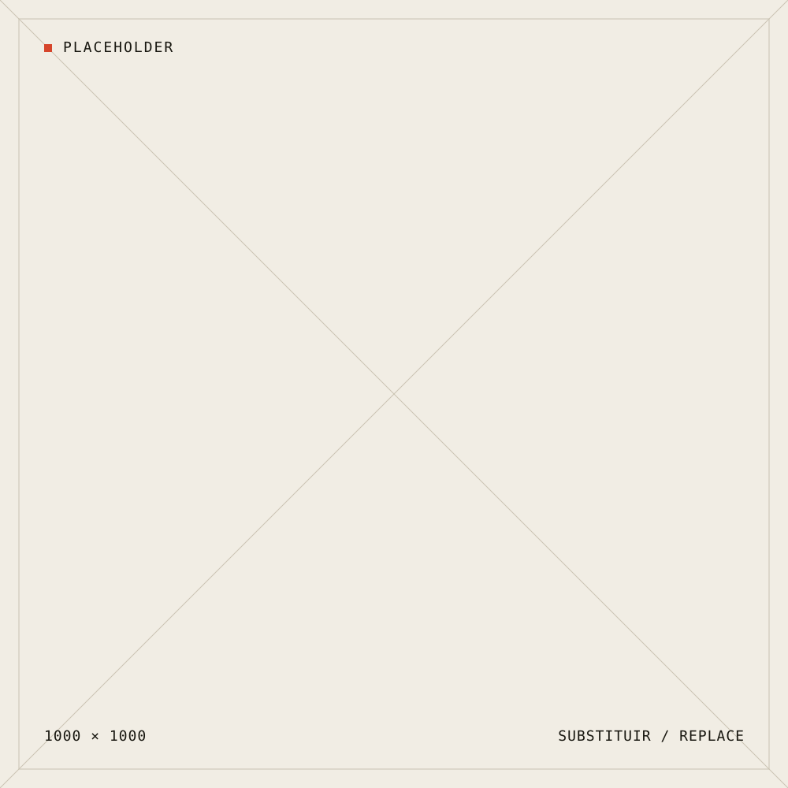

Branding / 2025
Rotten Carmilla
Identidade visual contratada para a banda em 2025. A logo é construída a partir dos traços que formam uma mosca, e o trabalho inclui a capa do single “Evicted in Blood and Smoke”.
As imagens são espaços reservados e serão substituídas pelos arquivos finais. Registros de rascunhos, vetorização, tratamento e protótipos estão a verificar; detalhes da capa seguem em conferência. As imagens obtidas no Pinterest não têm licença registrada e não serão usadas como assets finais enquanto não houver definição sobre direitos de uso.

Contexto
Uma banda de amigos, acompanhada de perto.
A Rotten Carmilla surgiu de amigos próximos que decidiram formar a banda. O trabalho de identidade visual aconteceu em 2025.
Acompanhei o desenvolvimento do grupo de perto: participei de conversas sobre a imagem e a mensagem que queriam transmitir e estive presente nos ensaios.
Fui contratado e remunerado para criar a logo, definir a identidade visual e desenvolver a capa do single “Evicted in Blood and Smoke”.
Publicações no Instagram fazem parte das entregas confirmadas. Story e adesivo seguem em verificação.
“As letras são os traços da mosca.”
Lettering / 2025Lettering e referências
A mosca é o lettering.
O nome aparece em duas linhas: ROTTEN CARMILLA. As letras são bastante estilizadas e de leitura difícil.
Os traços do lettering formam a mosca. Ela não é um elemento separado nem um desenho acrescentado depois: a construção das letras é a construção da mosca.
Logos genéricos de heavy metal serviram de referência para a dificuldade de leitura. Livros de anatomia de moscas foram usados como referência para desenhar esses traços de forma proporcional.
Preto e branco, com alguns detalhes em vermelho, são características visuais observadas nas peças. Não houve documentação formal de manual, paleta oficial ou tipografia complementar.


Processo de construção
Do desenho à arte final.
Rascunhos manuais
O lettering foi desenvolvido inicialmente em rascunhos feitos à mão.
Fotografia dos desenhos
Os desenhos foram fotografados para seguir o processo digital.
Vetorização no Illustrator
A arte passou por vetorização no Illustrator.
Tratamento no Photoshop
O tratamento e a estilização mais aprofundada foram feitos no Photoshop.

A disponibilidade desses registros ainda precisa ser verificada. As legendas não afirmam que os arquivos existem.
Capa do single
“Evicted in Blood and Smoke”.
A capa do single “Evicted in Blood and Smoke” foi desenvolvida como parte da contratação.
Esta prévia apresenta apenas espaços reservados para a capa e seus detalhes. Informações sobre embalagem, tijolo, textura e tipografia da capa seguem em conferência e não são descritas aqui.
As imagens usadas na capa foram obtidas no Pinterest e não têm licença registrada. Não serão tratadas como assets finais enquanto não houver definição sobre direitos de uso.
Ficha técnica
Informações do projeto.
- Categoria
- Branding / identidade visual
- Cliente / contexto
- Banda Rotten Carmilla
- Ano
- 2025
- Escopo
- Logo, identidade visual e capa de single
- Papel
- Contratado e remunerado
- Entregas
- Logo, identidade visual, capa de “Evicted in Blood and Smoke” e publicações no Instagram
- Ferramentas
- Illustrator e Photoshop
- Referências
- Logos genéricos de heavy metal; livros de anatomia de moscas
- Características observadas
- Preto e branco, com alguns detalhes em vermelho; sem manual, paleta oficial ou tipografia complementar documentados
- Status
- Prévia editorial; imagens, registros de processo e direitos de uso a verificar
Não há resultados, uso atual ou alcance documentados. Story, adesivo e detalhes da capa seguem em verificação.